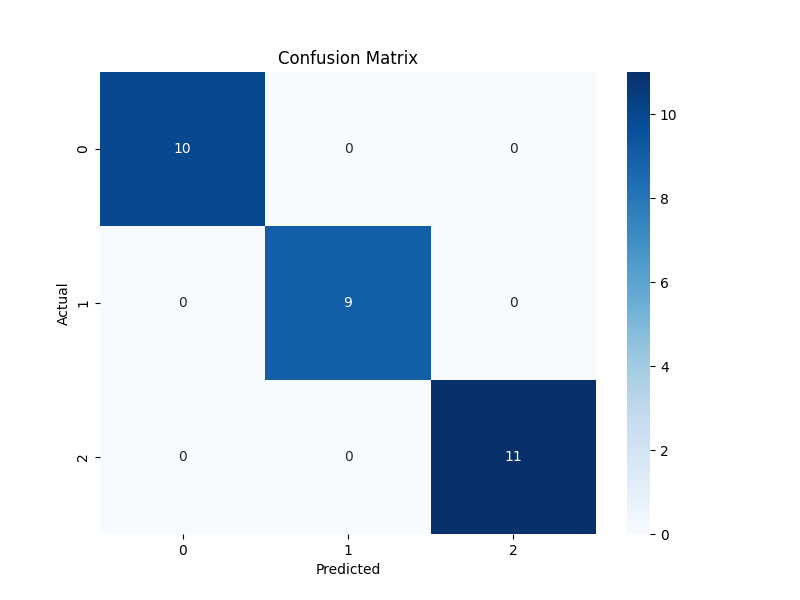

Model Accuracy
{{accuracy}}
Percentage of correct predictions
📊 About This Project
This report is automatically generated using a CI/CD pipeline with GitHub Actions. The Random Forest classifier is trained on the famous Iris dataset, which contains measurements of iris flowers from three different species.
🎯 Confusion Matrix

🔧 Technical Details
Algorithm: Random Forest Classifier
Dataset: Iris (150 samples, 4 features, 3 classes)
Train/Test Split: 80/20
Number of Estimators: 100
Random State: 42